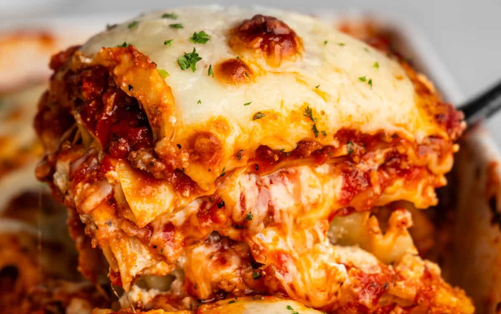

Lasagna

The Most Amazing Lasagna
The most amazing lasagna recipe is the best recipe for Italian-style lasagna.
The balance between layers of cheese, noodles, and homemade bolognese sauce is perfection!
Why you would love this recipe!
- A decadent bolognese sauce made from scratch brings the best tomato flavor.
- Ricotta cheese is used over the traditional bechamel to add a creamy texture that maintains the same classic flavor.
- Can be prepared ahead of time for minimal day-of effort.
- We use a special pasta hack that gives you the best pasta texture without the extra hassle of boiling.
Ingredients
- 1 pound ground Italian sausage
- 1 pound lean ground beef
- 1 large white onion diced
- 5 cloves minced garlic
- 1 (28 ounce can) crushed tomatoes
- 2 (6 ounce cans) tomato paste
- 1 (15 ounce can) tomato sauce passata or tomato puree
- 1/2 cup white wine
- 2 tablespoons granulated sugar
- 1/2 cup chopped fresh basil